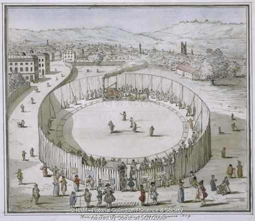
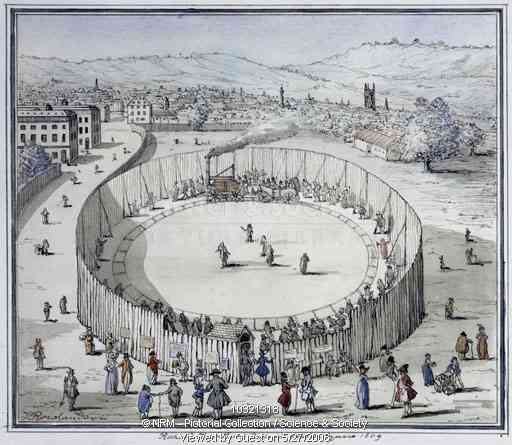
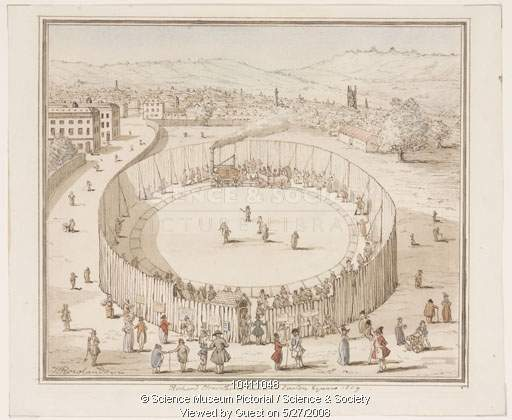
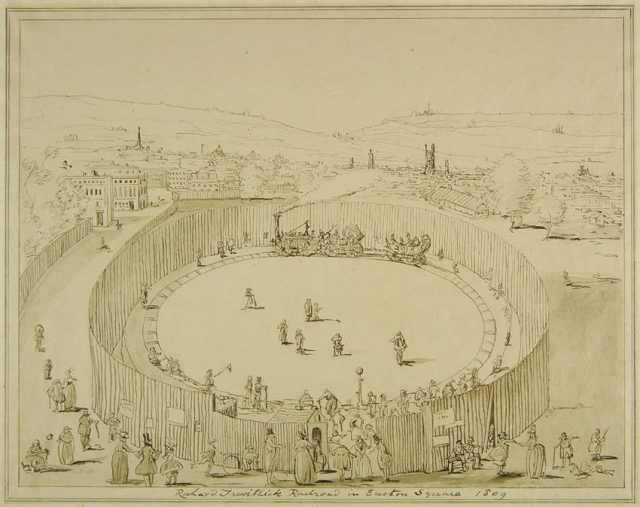
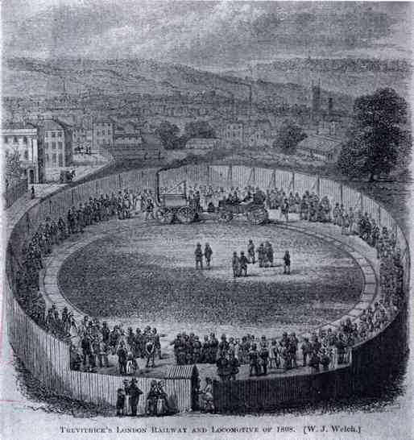

Illustrations Depicting Steam Circus
Sources:
- Cornwall Record Office (CRO).
- Cyfarthfa Castle Museum & Art Gallery (CCMAG).
- Science and Society Picture Library (SSPL).
Illustrations attributed to Thomas Rowlandson

Link to SSPL webpage
SSPL Picture Reference: 10300077
SSPL Inventory Number: 1977-7338

Link to SSPL webpage
SSPL Picture Reference: 10321318
SSPL Inventory Number: 1973-0336

Link to SSPL webpage
SSPL Picture Reference: 10411048
SSPL Inventory Number: 1973-0336

Link to CCMAG webpage
CCMAG Item reference: CCM.898.992
Gathering the Jewels reference: GTJ01593
Notice the subtle differences in the three watercolour drawings and the last ink drawing:
Within the exhibition area
- There is only one open carriage in the water colour drawing but there are two open carriages in the ink drawing.
- There is pole structure on the track in the ink colour, probably a start point.
- The number and arrangement of the participants is different.
- The wooden fence is unsupported by in the ink drawings while there appear to be some form wooden or otherwise bars in the water colour.
Outside the exhibition area
- The title of the watercolour drawings "Richard Trevithick's Railroad Euston Square, 1809" while the title of ink drawing is "Richard Trevithick's Railroad in Euston Square, 1809".
- The number and nature of activities amongst the public is different.
- The style of facade of the two buildings on the top left is different.
- The shape of the buildings and range of hills in the background is different.
- The space between the Steam Circus fence and the open field fence is different.
Such a variety of difference between the watercolour and ink drawings suggests that either a)ink drawing is a draft version of the water colour drawings or a different drawing or b)watercolour and ink drawing were done by separate artists.
Illustration by W. J. Welch

Link to CRO webpage
CRO Reference Number: AD862/82
Welch's drawing is clearly inspired by the drawings attributed to Rowlandson, particularly in its relation to the structure of the fence. However, it is more similar to the watercolour drawings than to the ink colour.